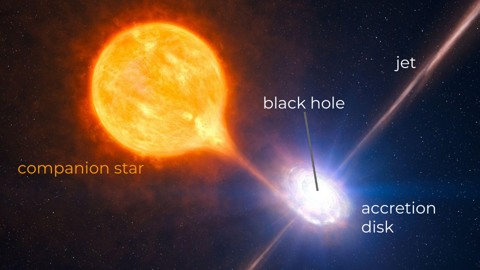
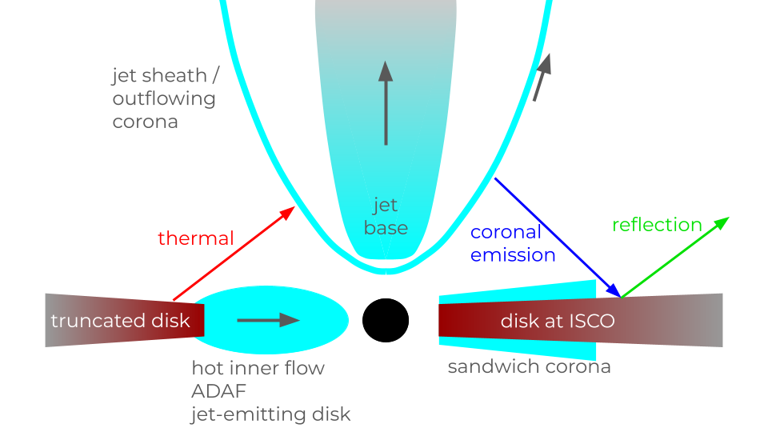
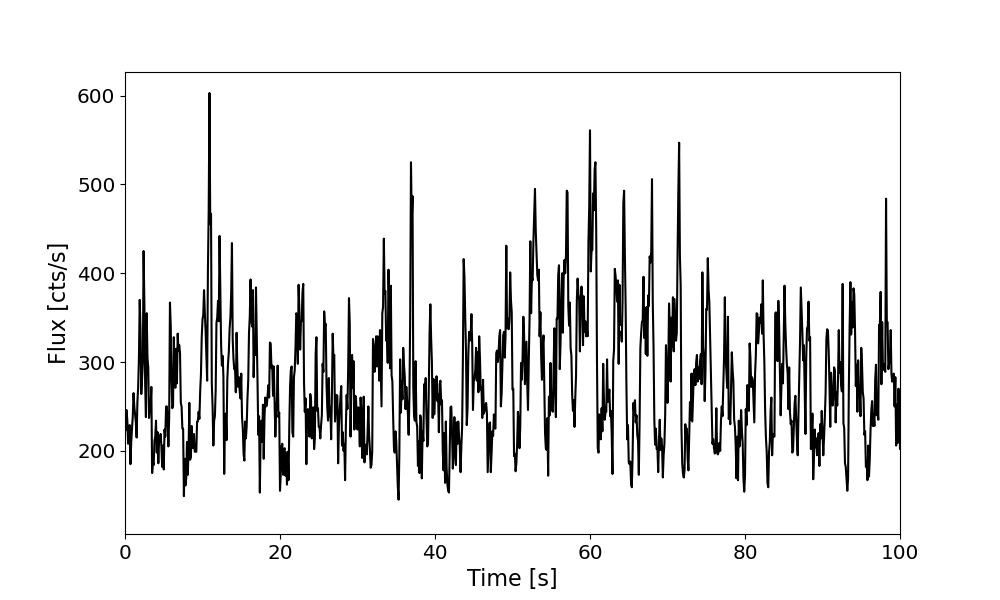
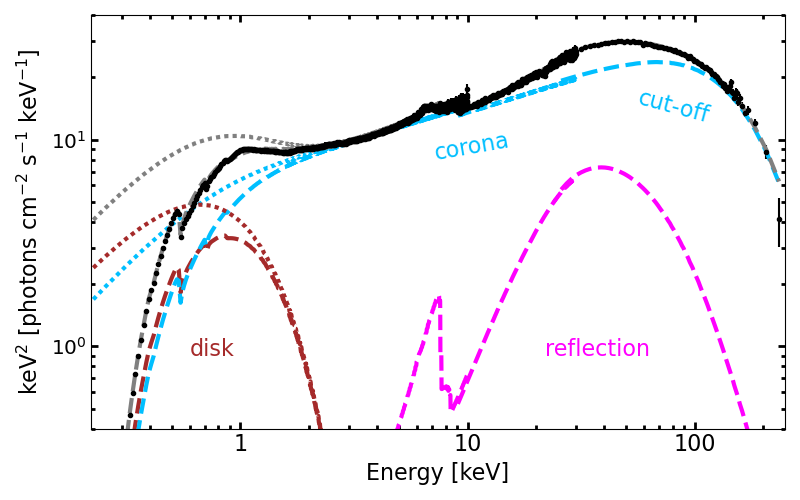

Home
My name is Niek Bollemeijer and I have recently defended my PhD thesis, titled `New spectral-timing techniques across the full X-ray band: revealing the dynamic corona in black hole X-ray binaries', at the University of Amsterdam, supervised by Dr. Phil Uttley. My PhD research was focused on the variability in the X-ray flux that is observed from accreting black holes, which will be explained in more detail on this website.
I am looking forward to working as a postdoc with Dr. Thomas Dauser at the Remeis-Sternwarte in Bamberg, which will start soon. My focus will shift towards detailed modelling of the reflection spectrum in black hole X-ray binaries and active galactic nuclei.
This website is still work in progress (June 2026).
Publication list
For an overview of my publications on ADS, see this link.
My PhD thesis can be found here.
Black hole X-ray binaries
My research revolves around finding new ways to analyse the variability observed in the X-ray flux from black hole X-ray binaries. Lone black holes are very difficult to observe, because light cannot escape their close vicinity. When a star orbits a black hole sufficiently close in a configuration known as a black hole X-ray binary, matter can flow from the star towards the black hole and form an accretion disk. Most of the time, accretion disks are too cold to be observed, but when they become unstable, their temperature rises by orders of magnitude and some of black hole X-ray binaries become among the brightest X-ray sources in the sky for a few weeks or months. Especially at the beginning and end of such an outburst, the X-ray flux is highly variable and this variability can inform us about what is going on in the accretion flow and close to the black hole. My PhD thesis contains several novel ways of analysing the variability in new detail, which I will briefly discuss below.


The geometry of the corona
Most of my research revolves around the origin of the X-rays. Although the accretion disk can be so hot that it emits a lot of X-rays, we observe much higher energy X-rays than can be produced this way. These "harder" (higher-energy) X-rays are thought to be produced by a cloud of hot electrons known as the "corona". Despite decades of research, there is still no consensus on what the corona is and what it looks like. In the figure to the left, which comes from my PhD thesis, I have summarized the possible coronal geometries that have been put forward. Two main scenarios are that the corona is the inner part of the accretion disk, which becomes much hotter and has a donut-like shape or that the corona is the base of the jet that accelerates matter away from the black hole perpendicular to the disk. There are arguments for both scenarios and by analysing data in new ways, I try to provide more constraint on the shape and behaviour of the corona.
X-ray spectral-timing
As a researcher, I focus on two ways of obtaining information from X-ray data. A generic X-ray data set from non-imaging telescopes like NICER and HXMT is very simple, as the main ingredients are the energy and arrival time of each photon. During my PhD, I focused on how the X-ray flux varies on short time-scales. By creating a histogram of the number of photons arriving every time (e.g. 0.01 s), it is possible to create a light curve like the example on the right. Such light curves can be made for different X-ray energy bands, allowing me to compare variability from different parts of the accretion flow. It turns out that the variability in these different parts is linked and shows small delays between energies, called time lags. Such time lags must have a physical origin and modelling them can aid in constraining the nature and geometry of the corona.


X-ray spectroscopy
The other method is based on the X-ray energies (or wavelengths) that are emitted. The accretion disk and the corona both emit X-rays with particular energy distributions. Part of the coronal emission is reflected by the disk, giving rise to a prominent "reflection spectrum" that is affected by the strong gravity close to the black hole. With detailed models of the reflection spectrum, it is possible to constrain the coronal geometry. From July 2026 on, I will work as a postdoc at the Dr. Remeis-Sternwarte Bamberg to extend such reflection models and apply them to data from both black hole X-ray binaries and active galactic nuclei (AGN) in the centers of galaxies.
Contact
If you have any questions, feel free to send me an email on: